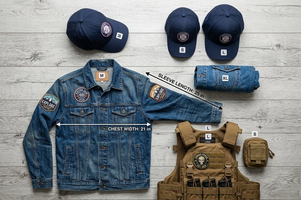

Patch Size Guide: How to Measure Dimensions & Choose the Right Size
Selecting the correct patch dimension is crucial for visual balance, text legibility, and manufacturing feasibility. In this comprehensive guide, learn the industry-standard patch size calculation formula, standard sizing for hats, jackets, and backpacks, and how dimensions directly influence your custom patch manufacturing costs.
1. Understanding Patch Size: The Industry Sizing Formula
When ordering custom patches from professional manufacturers, pricing and production specifications are calculated using the Standard Patch Sizing Formula rather than simple surface area or independent width and height measurements.
In the embroidery and custom emblem industry, patch size is defined as the mathematical average of the maximum width and maximum height of the design:
Patch Size Formula:
(Length + Width) / 2 = Patch Size
Step-by-Step Practical Calculation Examples:
- Rectangular Patch Example: If your patch measures 3.5 inches wide by 2.5 inches tall, add both numbers (3.5 + 2.5 = 6.0) and divide by 2. Your official patch size is 3.0 inches.
- Circular Patch Example: A round patch with a 3.0-inch diameter has a width of 3.0" and a height of 3.0" (3.0 + 3.0 = 6.0 / 2 = 3.0"). Its patch size is exactly 3.0 inches.
- Irregular Shield / Custom Die-Cut Shape: Measure the widest point from left to right and the tallest point from top to bottom, then apply the identical formula. If a tactical shield is 4.0 inches tall and 3.0 inches wide, the patch size is 3.5 inches.
2. Standard Patch Sizes by Apparel & Gear Placement
Choosing the ideal dimensions depends on where the patch will be affixed. A patch that looks perfect on the back of a canvas jacket will look awkwardly oversized on the front of a structured baseball cap. Below are the battle-tested industry standard dimensions for primary apparel items:
Baseball Caps, Snapbacks & Trucker Hats
Hat patches require strict vertical height limits due to the curved crown structure of headwear. Standard baseball caps and trucker hats typically accommodate patches between 2.25 inches and 2.75 inches tall, and up to 3.5 inches to 4.0 inches wide. Round hat patches generally max out at 2.5 inches in diameter so they sit flat without creasing over the center seam.
Hoodies, Denim Jackets & Casual Outerwear
- Left / Right Chest Placement: The most popular corporate and lifestyle location. Standard dimensions range from 3.0 inches to 3.5 inches for circular emblems, or 3.5" x 2.0" for rectangular brand crests.
- Upper Sleeve / Bicep Placement: Popular in military uniforms and outdoor technical apparel. Typical sizes range from 3.0 inches to 3.5 inches.
- Full Back Jacket Patches: Statement center pieces on denim, leather biker vests, or varsity jackets measure between 8.0 inches and 12.0 inches across. Rocker patches arched over top or bottom banners often measure 10.0 to 14.0 inches wide.
Tactical Backpacks, Plate Carriers & Morale Loop Panels
Military and tactical gear utilizes standard Hook-and-Loop Velcro panels. Standard tactical morale patches measure 3.0" x 2.0" (the US flag standard), while circular squad badges typically measure 3.0 inches in diameter. Name tapes and blood-type markers measure 1.0" tall by 4.0" to 5.0" wide.
Knit Beanies, Watch Caps & Hem Labels
Cuff foldover labels and beanie front patches favor smaller, compact profiles. Foldover woven or leather labels are typically 1.0" x 1.0" to 1.5" x 1.5", while centered front leather badges range from 2.0" x 1.25" to 2.25" x 1.5".

3. Comprehensive Patch Size & Placement Matrix
Refer to this quick-reference dimension matrix when planning your next custom patch order with ChinaPatchFactory:
| Garment / Gear Item | Specific Location | Standard Size Range | Most Popular Shape | Recommended Patch Style |
|---|---|---|---|---|
| Structured Baseball Cap | Front Crown Center | 2.25" to 2.5" Round / 3.5"x2.25" | Circle, Rectangle, Hexagon | Leather, Woven, 3D Puff |
| Knit Beanie / Winter Hat | Folded Front Cuff | 1.75" x 1.25" to 2.25" x 1.5" | Horizontal Rectangle, Diamond | Debossed Leather, Damask Woven |
| Denim / Workwear Jacket | Left Chest Pocket | 3.0" to 3.5" | Shield, Round, Die-Cut | Embroidered, Woven, Chenille |
| Biker Vest / Varsity Coat | Full Back Panel | 9.0" to 13.0" | Center Crest + Arched Rockers | Heavy Embroidered Twill, Chenille |
| Tactical Plate Carrier / Vest | Chest Loop Panel | 3.0" x 2.0" or 3.5" x 2.0" | Flag Rectangle, Callsign | PVC Rubber with Velcro Hook |
| Outdoor Backpack | Top Flap / Front Pocket | 2.5" to 3.5" | Shield, Custom Silhouette | Embroidered or Waterproof PVC |
4. How Shape Affects Canvas Space & Visual Weight
Two patches sharing the identical 3.0-inch size calculation can possess remarkably different visual presence depending on their geometric shape:
- Square (3.0" x 3.0"): Yields 9.0 square inches of surface area. It offers maximum canvas space for intricate illustrations and multiple lines of typography.
- Circle (3.0" diameter): Yields approximately 7.06 square inches of surface area. While slightly smaller in physical square inches than a square, circles provide a balanced, natural boundary that visually centers logos.
- Narrow Rectangle (5.0" x 1.0"): Calculates to a 3.0-inch patch ((5+1)/2 = 3.0"), yet yields only 5.0 square inches of canvas area. It is optimized strictly for single-line text, URL links, or military callsign name tapes.
- Custom Die-Cut Outlines: Freeform shapes follow the exact silhouette of your artwork. Die-cut borders reduce negative space and allow your subject matter (such as animal mascots or skull logos) to pop dramatically on fabric.
5. Balancing Patch Size with Embroidery & Text Legibility Limits
One of the most frequent errors made by graphic designers transitioning to custom patch manufacturing is shrinking complex vector artwork below the physical resolution limits of needle and thread.
Minimum Text Size Thresholds:
- Traditional Embroidered Patches: The absolute minimum legible embroidered text height is 0.25 inches (6.35mm). Letters smaller than 1/4 inch bunch together as the physical thread loops overlap.
- Custom Woven Patches: Because woven emblems utilize ultra-fine micro-yarns on automated jacquard looms, text can cleanly render as small as 0.12 inches (3.0mm). If your logo contains dense fine print or copyright symbols, choose woven patches over embroidery.
- Border Width Allowance: Keep in mind that a traditional merrowed edge border takes up approximately 1/8 inch (3mm) around the entire perimeter of the patch. Design your core text and focal graphics inside a safe margin at least 4mm away from outer edge borders.
Pro Tip: The 1:1 Scale Print Test
Before submitting vector artwork, print your design on paper at 100% actual scale (1:1), cut it out with scissors, and hold it against the target garment or hat. Step back 4 feet. If small text or fine details cannot be read effortlessly, enlarge the patch dimension by 0.5 inches or simplify the artwork.
6. How Patch Dimensions Impact Manufacturing Costs
Understanding the pricing mechanics of patch dimensions helps optimize your procurement budget:
- Tiers are Based on Sizing Formula: Custom patch prices are categorized into half-inch increment brackets (e.g., 2.0", 2.5", 3.0", 3.5", 4.0"). Designing a patch at 2.9" instead of 3.1" keeps the unit price in the 3.0" price bracket rather than jumping to the 3.5" tier.
- Embroidery Stitch Density: Larger patches require significantly higher stitch counts. A 4.0-inch patch may require 25,000+ stitches compared to 8,000 stitches for a 2.5-inch patch, increasing machine run times.
- Backing Material Consumption: High-end attachments like authentic Hook-and-Loop Velcro or heavy-duty thermo-adhesive film scale linearly with surface dimensions.
7. Pre-Order Patch Sizing Checklist for Designers
Run through this 6-point pre-flight checklist before submitting your quote request to ChinaPatchFactory:
- ✔️ Calculate Size with the Formula: Add Width + Height and divide by 2 to determine your official pricing bracket.
- ✔️ Check Cap Height Restrictions: Ensure patches designated for baseball caps do not exceed 2.5" to 2.75" in total height.
- ✔️ Verify Minimum Letter Height: Confirm embroidered letters are at least 0.25" tall; switch to woven if smaller text is mandatory.
- ✔️ Account for Perimeter Border: Leave at least 3mm to 4mm safe margin for merrowed or laser heat-cut borders.
- ✔️ Conduct Physical 1:1 Paper Mockup: Print artwork at 100% scale and test physical placement on actual apparel.
- ✔️ Request Free 12-Hour Digital Proof: Inspect our digitized stitch proof with verified millimeter measurements before production approval.
Frequently Asked Questions (FAQ)
Q1: How do I know what size patch to order if my design is an irregular shape?
Simply measure the widest horizontal point and the tallest vertical point in inches. Add those two numbers together and divide by two. For example, an irregular mascot patch measuring 3.5" wide by 2.5" tall calculates to a 3.0" patch size.
Q2: What is the most popular patch size for baseball caps?
The standard and most aesthetically pleasing patch size for structured caps is 2.5 inches in diameter for round patches, or 3.5" wide by 2.25" tall for rectangular and hexagonal patches. Anything taller than 2.75" will bunch over the top crown curve.
Q3: Can small intricate text be embroidered on a 2.0-inch patch?
Traditional embroidery thread requires a minimum text height of 0.25 inches (6.35mm) for legibility. On a 2.0-inch patch, space is limited to short words or acronyms. For intricate slogans or fine web addresses, we recommend choosing custom woven patches which cleanly reproduce text down to 0.12 inches.
Q4: Does ordering a larger patch size cost significantly more?
Pricing increases incrementally between half-inch size tiers (such as moving from 2.5" to 3.0"). Because larger patches require more thread stitches, larger backing materials, and longer machine run times, bulk order volume discounts are the best way to offset sizing upgrades.
Q5: Can ChinaPatchFactory resize my artwork if my dimensions are incorrect?
Yes, absolutely! Our master digitizers will review your vector artwork, evaluate your intended garment placement, and provide a complimentary 12-hour digital proof resized to optimal proportions for crisp manufacturing.
Conclusion & Getting Your Free Sizing Proof
Choosing the correct patch size is the foundation of a successful custom emblem project. By balancing the mathematical sizing formula with target apparel dimensions and embroidery legibility thresholds, your patches will achieve superior visual balance and professional craftsmanship.
At ChinaPatchFactory, we eliminate guesswork by providing 100% free digital embroidery proofs with exact millimeter dimensions within 12 hours of receiving your quote request. Whether you need 10 sample patches or 20,000 factory-direct units, our engineering team ensures flawless sizing execution.
Ready to Order Custom Sized Patches?
Upload your logo or artwork today. Our master digitizers will scale your design, provide expert sizing recommendations, and deliver a free 12-hour digital proof with factory-direct pricing!
Get Free Quote